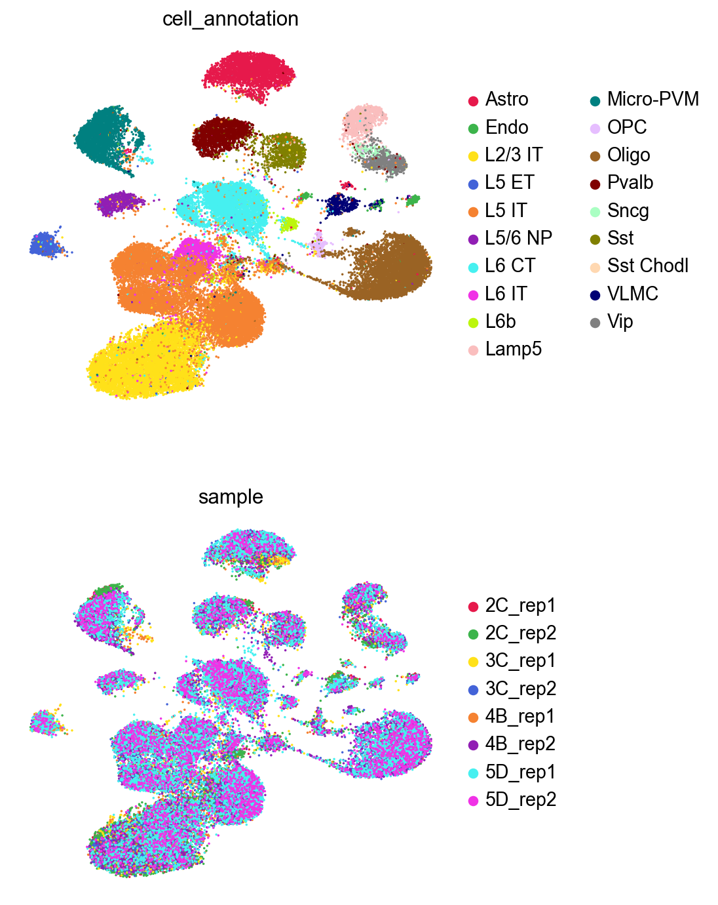
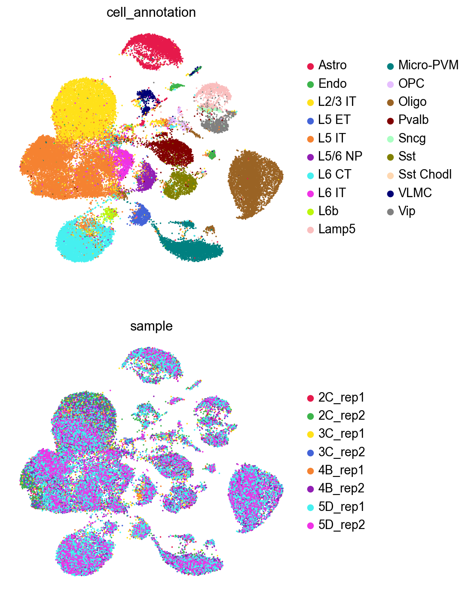

Running GDR on scATAC-seq data#
GDR demonstrates strong performance not only with scRNA-seq data but also with scATAC-seq data. Despite scATAC-seq data being characteristically sparse and containing significantly more features than scRNA-seq, GDR effectively manages these challenges. This notebook illustrates how GDR can be successfully applied to scATAC-seq datasets.
[1]:
import scanpy as sc
import os
import logging
from matplotlib import rcParams
import time
import warnings
[2]:
import sys
path = '/home/vas744/Analysis/Python/Packages/PIASO'
sys.path.append(path)
path = '/home/vas744/Analysis/Python/Packages/COSG'
sys.path.append(path)
import piaso
/home/vas744/.local/lib/python3.9/site-packages/networkx/utils/backends.py:135: RuntimeWarning: networkx backend defined more than once: nx-loopback
backends.update(_get_backends("networkx.backends"))
[3]:
warnings.simplefilter(action='ignore', category=FutureWarning)
[4]:
sc.set_figure_params(dpi=80,dpi_save=300, color_map='viridis',facecolor='white')
rcParams['figure.figsize'] = 5, 5
rcParams['font.sans-serif'] = "Arial"
rcParams['font.family'] = "Arial"
sc.settings.verbosity = 3
sc.logging.print_header()
scanpy==1.10.3 anndata==0.10.8 umap==0.5.7 numpy==1.26.4 scipy==1.13.0 pandas==2.2.3 scikit-learn==1.5.2 statsmodels==0.14.4 igraph==0.11.5 louvain==0.8.2 pynndescent==0.5.13
Load the data#
The scATAC-seq data being used for this tutorial can be download from here: https://drive.google.com/file/d/1lJYqU2ZbTP2knLDqUFRtALCmercWqQRE/view?usp=drive_link
[5]:
!/home/vas744/Software/gdrive files download --overwrite --destination /n/scratch/users/v/vas744/Data/Public/PIASO 1lJYqU2ZbTP2knLDqUFRtALCmercWqQRE
Downloading Zemke_2023_mouse_normalized.h5ad
Successfully downloaded Zemke_2023_mouse_normalized.h5ad
[6]:
adata_path = os.path.join("/n/scratch/users/v/vas744/Data/Public/PIASO", "Zemke_2023_mouse_normalized.h5ad")
[7]:
adata = sc.read(
adata_path,
)
adata
[7]:
AnnData object with n_obs × n_vars = 45089 × 330448
obs: 'sample', 'cell_annotation'
layers: 'raw'
[8]:
adata.layers['log1p'] = adata.X.copy()
GDR with batch information, no cell type information#
[9]:
start_time = time.time()
piaso.tl.runGDRParallel(adata,
batch_key='sample',
groupby=None,
n_gene=200,
mu=10,
use_highly_variable=False,
n_highly_variable_genes=5000,
layer='log1p',
score_layer='log1p',
n_svd_dims=50,
resolution=3.0,
scoring_method=None,
key_added='X_gdr_1',
max_workers = 4,
verbosity=0)
end_time = time.time()
parallel_time = end_time - start_time
print("Time required to run parallel runGDR: ", parallel_time)
Calculating marker genes in batches: 100%|██████████| 8/8 [09:49<00:00, 73.66s/batch]
Calculating cell embeddings: 100%|██████████| 8/8 [52:34<00:00, 394.30s/batch]
The cell embeddings calculated by GDR were saved as `X_gdr_1` in adata.obsm.
Time required to run parallel runGDR: 3756.714690923691
Visualize GDR results#
[15]:
%%time
sc.pp.neighbors(adata,
use_rep='X_gdr_1',
n_neighbors=15,
random_state=10,
knn=True,
method="umap")
sc.tl.umap(adata)
computing neighbors
finished: added to `.uns['neighbors']`
`.obsp['distances']`, distances for each pair of neighbors
`.obsp['connectivities']`, weighted adjacency matrix (0:00:10)
computing UMAP
finished: added
'X_umap', UMAP coordinates (adata.obsm)
'umap', UMAP parameters (adata.uns) (0:01:00)
CPU times: user 1min 49s, sys: 1.31 s, total: 1min 50s
Wall time: 1min 11s
[16]:
sc.pl.umap(adata,
color=['cell_annotation','sample'],
palette=piaso.pl.color.d_color4,
cmap=piaso.pl.color.c_color4,
size=10,
ncols=1,
frameon=False)

GDR with no batch information, no cell type information#
[12]:
start_time = time.time()
piaso.tl.runGDRParallel(adata,
batch_key=None,
groupby=None,
n_gene=200,
mu=10,
use_highly_variable=False,
n_highly_variable_genes=5000,
layer='log1p',
score_layer='log1p',
n_svd_dims=50,
resolution=3.0,
scoring_method=None,
key_added='X_gdr_2',
max_workers = 4,
verbosity=0)
end_time = time.time()
parallel_time = end_time - start_time
print("Time required to run parallel runGDR: ", parallel_time)
The cell embeddings calculated by GDR were saved as `X_gdr_2` in adata.obsm.
Time required to run parallel runGDR: 1945.1909103393555
Visualize GDR results#
[17]:
%%time
sc.pp.neighbors(adata,
use_rep='X_gdr_2',
n_neighbors=15,
random_state=10,
knn=True,
method="umap")
sc.tl.umap(adata)
computing neighbors
finished: added to `.uns['neighbors']`
`.obsp['distances']`, distances for each pair of neighbors
`.obsp['connectivities']`, weighted adjacency matrix (0:00:08)
computing UMAP
finished: added
'X_umap', UMAP coordinates (adata.obsm)
'umap', UMAP parameters (adata.uns) (0:01:18)
CPU times: user 7min 56s, sys: 1.62 s, total: 7min 57s
Wall time: 1min 27s
[18]:
sc.pl.umap(adata,
color=['cell_annotation','sample'],
palette=piaso.pl.color.d_color4,
cmap=piaso.pl.color.c_color4,
size=10,
ncols=1,
frameon=False)
